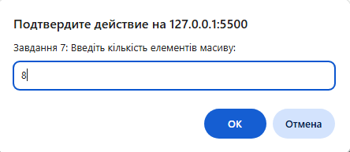
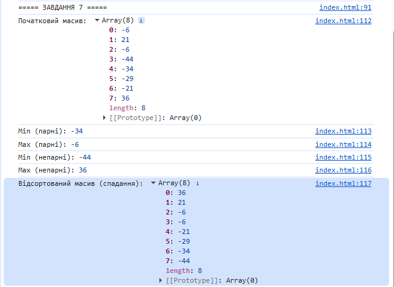

console.log("===== ЗАВДАННЯ 7 ====="); function generateArray(length) { let arr = []; for (let i = 0; i < length; i++) arr.push(Math.floor(Math.random() * 100) - 50); return arr; } function findMinEven(arr) { return Math.min(...arr.filter((_, idx) => idx % 2 === 0)); } function findMaxEven(arr) { return Math.max(...arr.filter((_, idx) => idx % 2 === 0)); } function findMinOdd(arr) { return Math.min(...arr.filter((_, idx) => idx % 2 !== 0)); } function findMaxOdd(arr) { return Math.max(...arr.filter((_, idx) => idx % 2 !== 0)); } function selectionSortDesc(arr) { let a = [...arr]; for (let i = 0; i < a.length - 1; i++) { let maxIndex = i; for (let j = i + 1; j < a.length; j++) if (a[j] > a[maxIndex]) maxIndex = j; [a[i], a[maxIndex]] = [a[maxIndex], a[i]]; } return a; } let length7 = Number(prompt("Завдання 7: Введіть кількість елементів масиву:")); let arr7 = generateArray(length7); console.log("Початковий масив:", arr7); console.log("Min (парні):", findMinEven(arr7)); console.log("Max (парні):", findMaxEven(arr7)); console.log("Min (непарні):", findMinOdd(arr7)); console.log("Max (непарні):", findMaxOdd(arr7)); console.log("Відсортований масив (спадання):", selectionSortDesc(arr7));

